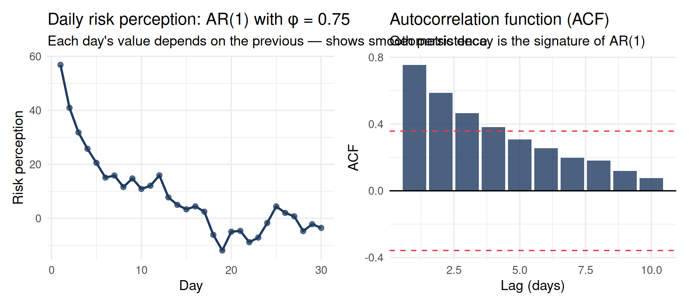

Code
# Simulate AR(1) process for one person: 30 days of daily risk perception
phi <- 0.75
sigma <- 3
n_t <- 30
Y <- numeric(n_t)
Y[1] <- rnorm(1, 50, 5)
for (t in 2:n_t) Y[t] <- phi * Y[t-1] + rnorm(1, 0, sigma)
p1 <- tibble(day = 1:n_t, risk_perception = Y) |>
ggplot(aes(x = day, y = risk_perception)) +
geom_line(color = "#1e3a5f", linewidth = 1) +
geom_point(size = 2, color = "#1e3a5f", alpha = 0.7) +
labs(
title = paste0("Daily risk perception: AR(1) with φ = ", phi),
subtitle = "Each day's value depends on the previous — shows smooth persistence",
x = "Day", y = "Risk perception"
) +
theme_minimal(base_size = 13)
acf_vals <- acf(Y, plot = FALSE, lag.max = 10)
p2 <- tibble(lag = 0:10, acf = acf_vals$acf[,1,1]) |>
filter(lag > 0) |>
ggplot(aes(x = lag, y = acf)) +
geom_col(fill = "#1e3a5f", alpha = 0.8) +
geom_hline(yintercept = 0, color = "black") +
geom_hline(yintercept = c(-1, 1) * 1.96 / sqrt(n_t),
linetype = "dashed", color = "#e63946") +
labs(
title = "Autocorrelation function (ACF)",
subtitle = "Geometric decay is the signature of AR(1)",
x = "Lag (days)", y = "ACF"
) +
theme_minimal(base_size = 13)
p1 + p2